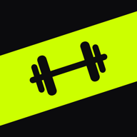

BARLOGAide et contact
Une question, un problème, un contenu à signaler ? Écris à barlog.gym.app@gmail.com. Nous répondons généralement sous 2 jours, et sous 24 heures pour un signalement.
Questions fréquentes
Faut-il un compte ?
Non. Sans compte, Barlog fonctionne entièrement sur ton téléphone. Le compte sert seulement au partage (fil, abonnements, bravos, commentaires) et, avec Barlog Pro, à la sauvegarde en ligne.
Comment retrouver mes séances sur un nouveau téléphone ?
Si tu as activé la sauvegarde en ligne (Barlog Pro), connecte-toi au même compte : elle est restaurée. Sinon, exporte tes données (Profil → Exporter) et importe le fichier sur le nouveau téléphone.
Comment signaler un contenu ou bloquer quelqu’un ?
Touche ⋯ sur la publication, le commentaire ou le profil, puis Signaler ou Bloquer. Chaque signalement est examiné sous 24 heures. Tu peux aussi écrire à l’adresse ci-dessus.
Je ne reçois pas le code de connexion
Vérifie tes courriels indésirables, attends une minute puis touche « Renvoyer le code ». Le code reste valable 10 minutes.
Se connecter avec un mot de passe, ou je l’ai oublié
Connecte-toi une fois avec le code reçu par e-mail, puis choisis un mot de passe dans Profil → Compte → Mot de passe. Ensuite, « Se connecter avec un mot de passe » évite d’attendre le code. Mot de passe oublié : connecte-toi avec un code, puis choisis-en un nouveau au même endroit.
Santé et Health Connect
La liaison se règle dans Profil → Santé ; les autorisations se changent dans les réglages de ton téléphone (Santé sur iPhone, Health Connect sur Android).
Capteur cardiaque (ceinture Bluetooth)
Sur iPhone et Android, avec Barlog Pro : Profil → Capteur cardiaque. Mets ta ceinture (elle s’allume au contact de la peau, électrodes humides), touche « Chercher » et choisis-la. Ensuite, elle se connecte toute seule au début de chaque séance et se déconnecte à « Terminer ». Ça marche avec les ceintures qui utilisent le service Bluetooth standard de fréquence cardiaque (Garmin, Polar, Wahoo…). Sur Android, une notification « ♥ BPM » s’affiche pendant la séance : c’est elle qui permet de recevoir ta fréquence cardiaque écran verrouillé, et elle disparaît à « Terminer ». Si la ceinture n’apparaît pas : vérifie que le Bluetooth est allumé et autorisé (iPhone : Réglages → Barlog → Bluetooth ; Android : Paramètres → Applications → Barlog → Autorisations → Appareils à proximité, ou « Position » avec la localisation allumée sur Android 8 à 11), et qu’elle n’est pas déjà prise par une montre ou une autre app (certaines ceintures n’acceptent qu’une connexion à la fois). Une ceinture retirée peut encore envoyer des valeurs quelques minutes avant de s’éteindre. Ta fréquence cardiaque n’apparaît sur tes publications que si tu actives « Montrer ma fréquence cardiaque » (Profil → Compte).
Supprimer ton compte
Dans l’app : Profil → Compte → Supprimer mon compte. La suppression est immédiate.
Sans l’app (par exemple si tu l’as désinstallée) : écris à barlog.gym.app@gmail.com depuis l’adresse e-mail de ton compte, avec pour objet « Suppression de compte » et ton pseudo. Nous supprimons le compte sous 7 jours au plus et te le confirmons par e-mail.
Ce qui est supprimé : ton compte et ton adresse e-mail, ton profil, ta photo, ta sauvegarde en ligne, tes séances publiées, tes abonnements, tes bravos, tes commentaires, tes notifications et tes blocages. Ce qui reste : les signalements que tu as envoyés, sans lien avec ton compte, le temps de les traiter (1 an au plus) ; les séances enregistrées sur ton téléphone, que toi seul·e contrôles. Les copies de sécurité techniques de l’hébergeur s’effacent automatiquement en quelques jours. Détails : politique de confidentialité.
Un abonnement Barlog Pro se gère chez Apple ou Google : supprimer ton compte ne l’annule pas.
Help and contact
A question, a problem, content to report? Write to barlog.gym.app@gmail.com. We usually reply within 2 days, and within 24 hours for a report.
Frequently asked questions
Do I need an account?
No. Without an account, Barlog runs entirely on your phone. The account is only used for sharing (feed, follows, kudos, comments) and, with Barlog Pro, for online backup.
How do I get my workouts on a new phone?
If you turned on online backup (Barlog Pro), sign in to the same account: it is restored. Otherwise, export your data (Profile → Export) and import the file on the new phone.
How do I report content or block someone?
Tap ⋯ on the post, comment or profile, then Report or Block. Every report is reviewed within 24 hours. You can also write to the address above.
I don’t get the sign-in code
Check your spam folder, wait a minute, then tap “Resend code”. The code is valid for 10 minutes.
Signing in with a password, or I forgot it
Sign in once with the code sent by email, then pick a password in Profile → Account → Password. After that, “Sign in with a password” saves you waiting for the code. Forgot it? Sign in with a code, then pick a new one in the same place.
Health and Health Connect
The link is set in Profile → Health; permissions are changed in your phone’s settings (Health on iPhone, Health Connect on Android).
Heart rate sensor (Bluetooth strap)
On iPhone and Android, with Barlog Pro: Profile → Heart rate sensor. Put your strap on (it turns on when it touches your skin, with moist electrodes), tap “Search” and choose it. After that, it connects by itself when each workout starts and disconnects when you tap “Finish”. It works with straps that use the standard Bluetooth heart rate service (Garmin, Polar, Wahoo…). On Android, a “♥ BPM” notification shows during the workout: it lets your heart rate arrive with the screen locked, and it goes away when you tap “Finish”. If the strap doesn’t show up: make sure Bluetooth is on and allowed (iPhone: Settings → Barlog → Bluetooth; Android: Settings → Apps → Barlog → Permissions → Nearby devices, or “Location” with location turned on for Android 8 to 11), and that it isn’t already taken by a watch or another app (some straps accept only one connection at a time). A strap you took off can keep sending values for a few minutes before it turns off. Your heart rate appears on your posts only if you turn on “Show my heart rate” (Profile → Account).
Delete your account
In the app: Profile → Account → Delete my account. Deletion is immediate.
Without the app (for example if you uninstalled it): write to barlog.gym.app@gmail.com from your account’s email address, with the subject “Account deletion” and your username. We delete the account within 7 days at most and confirm by email.
What is deleted: your account and email address, profile, photo, online backup, published workouts, follows, kudos, comments, notifications and blocks. What remains: reports you sent, no longer linked to your account, while they are handled (1 year at most); workouts saved on your phone, which only you control. Our host’s technical backups are erased automatically within a few days. Details: privacy policy.
A Barlog Pro subscription is managed by Apple or Google: deleting your account does not cancel it.